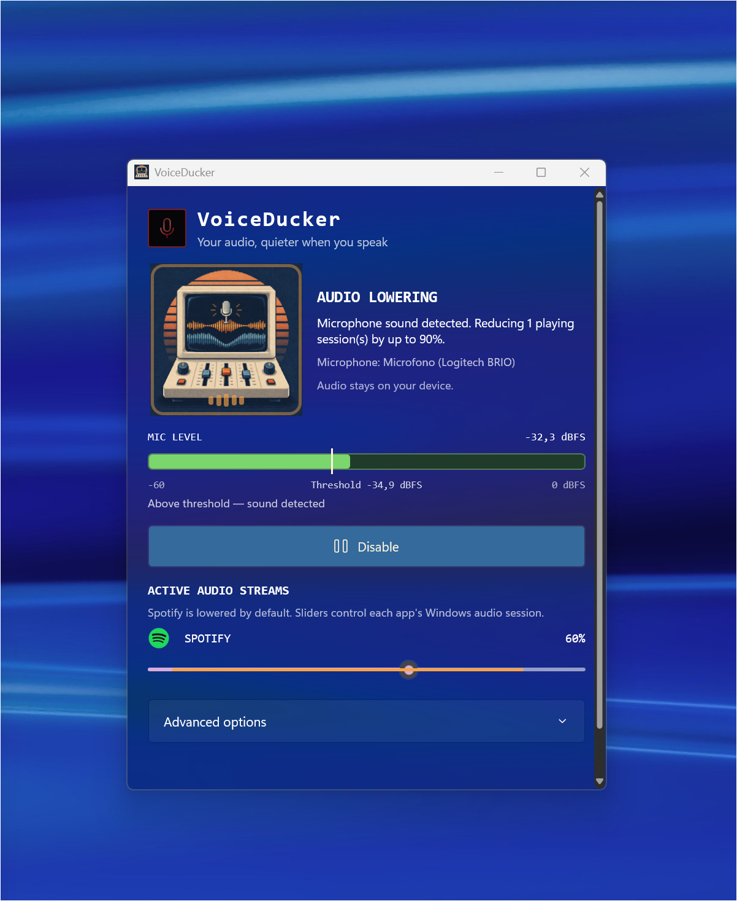
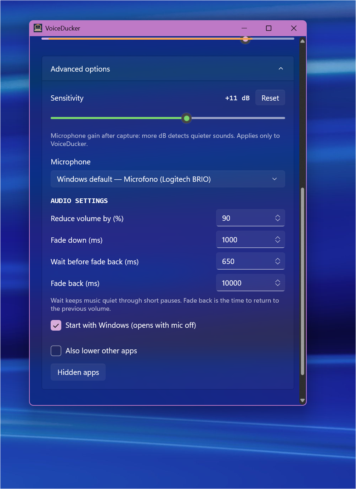

VoiceDucker
NATIVE WINDOWS · WINUI 3
01 / Your audio, in sync
Speak.
Music steps
aside.
Keep your music playing. VoiceDucker turns it down when your microphone detects sound.
See your microphone level live.
See when sound crosses the threshold.
Adjust each app’s volume directly.
MICROPHONE ON ONLY WHEN YOU ENABLE IT.

02 / Tune it to your voice
Your mic.
Your pace.
Your settings.
A few simple controls, right where you need them.
Sensitivity in dB, with one-click Reset.
Choose the microphone you use.
Keep music quiet through short pauses.
Set how quickly volume fades back.
SETTINGS ARE SAVED AUTOMATICALLY.
